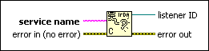

IrDA Create Listener Function
Owning Palette: IrDA Functions
Requires: Base Development System (Windows)
Creates a listener for an IrDA connection on a wireless network using the service name and returns listener ID.
After you create the listener ID, you can use the IrDA Wait on Listener function to wait for the detection of a remote computer.

 Add to the block diagram Add to the block diagram |
 Find on the palette Find on the palette |